rm(list = ls())
library(ggplot2)
theme_set(theme_bw(base_size = 15))
source('https://gist.githubusercontent.com/liangyy/43912b3ecab5d10c89f9d4b2669871c9/raw/3ca651cfa53ffccb8422f432561138a46e93710f/my_ggplot_theme.R')
source('https://raw.githubusercontent.com/liangyy/misc-tools/master/plot_tool/plot_tools.R')
library(dplyr)
options(stringsAsFactors = F)
library(patchwork)
library(data.table)
options(datatable.fread.datatable = F)
source('rlib.R')
library(ggpubr)
library(pander)
panderOptions("table.split.table", Inf)Here I ran S-ImageXcan on 114 GTEx-GWAS phenotypes.
pheno_list = read.table('../submission/simagexcan/gtex_gwas_list.txt', header = F)$V1
df = list()
for(idp_type in c('dmri', 't1')) {
for(p in pheno_list) {
fn = paste0('~/Desktop/tmp/ukb_idp/simagexcan/results/', idp_type, '_gtex_gwas_x_', p, '_x_simagexcan.csv')
if(file.exists(fn)) {
tmp = read.csv(fn)
df[[length(df) + 1]] = tmp %>% mutate(phenotype = p, idp_type = idp_type)
}
}
}
df = do.call(rbind, df)Load dMRI and T1 IDP annotations.
t1 = readRDS('../misc_data/process_t1/t1_meta.rds')
t1 = t1 %>% mutate(IDP = paste0('IDP-', FieldID))
dmri = readRDS('../misc_data/download_some_matching_files/annot_dmri_idps.rds')
dmri = dmri %>% mutate(IDP = paste0('IDP-', FieldID))
idps = c('t1', 'dmri')
df_annot = rbind(
t1 %>% select(IDP, Field),
dmri %>% select(IDP, Field)
)qqplot_by_group(df$pval, group = df$idp_type) + th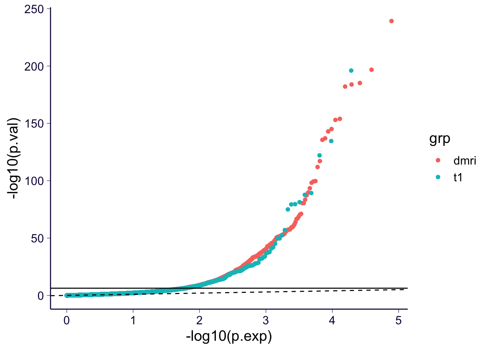
df %>% ggplot() + geom_jitter(aes(x = phenotype, y = pip, color = factor(cs95)), width = 0.3, height = 0, alpha = 0.2) + theme(axis.text.x = element_blank()) + th2 + facet_wrap(~idp_type, ncol = 1)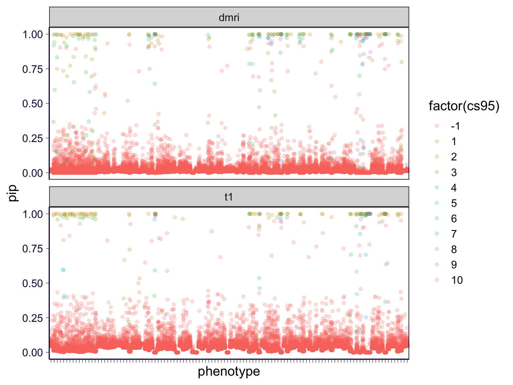
df = df %>% mutate(p_adj = pval * n())
bonferroni_cutoff = 0.01
message('There are ', df %>% filter(p_adj < bonferroni_cutoff) %>% nrow, ' IDP-phenotype pairs passed Bonferroni significance cutoff at ', bonferroni_cutoff)## There are 1415 IDP-phenotype pairs passed Bonferroni significance cutoff at 0.01message('There are ', df %>% filter(cs95 > 0) %>% nrow, ' IDP-phenotype pairs within 95% credible set')## There are 429 IDP-phenotype pairs within 95% credible setHere we focus on the phenotypes with at least one hit within 95% credible set.
df_cs = df %>% filter(cs95 > 0)
phenos = c('Astle_et_al_2016_Eosinophil_counts', 'Astle_et_al_2016_Granulocyte_count', 'Astle_et_al_2016_High_light_scatter_reticulocyte_count', 'Astle_et_al_2016_Lymphocyte_counts', 'Astle_et_al_2016_Monocyte_count', 'Astle_et_al_2016_Myeloid_white_cell_count', 'Astle_et_al_2016_Neutrophil_count', 'Astle_et_al_2016_Platelet_count', 'Astle_et_al_2016_Red_blood_cell_count', 'Astle_et_al_2016_Reticulocyte_count', 'Astle_et_al_2016_Sum_basophil_neutrophil_counts', 'Astle_et_al_2016_Sum_eosinophil_basophil_counts', 'Astle_et_al_2016_Sum_neutrophil_eosinophil_counts', 'Astle_et_al_2016_White_blood_cell_count', 'EGG_BL', 'EGG_BW3_EUR', 'GIANT_2015_BMI_EUR', 'GIANT_HEIGHT', 'IBD.EUR.Crohns_Disease', 'RA_OKADA_TRANS_ETHNIC', 'SSGAC_Depressive_Symptoms', 'SSGAC_Education_Years_Pooled', 'UKB_1160_Sleep_duration', 'UKB_1180_Morning_or_evening_person_chronotype', 'UKB_1807_Fathers_age_at_death', 'UKB_20002_1065_self_reported_hypertension', 'UKB_20002_1111_self_reported_asthma', 'UKB_20002_1225_self_reported_hyperthyroidism_or_thyrotoxicosis', 'UKB_20002_1309_self_reported_osteoporosis', 'UKB_20002_1453_self_reported_psoriasis', 'UKB_20002_1473_self_reported_high_cholesterol', 'UKB_20016_Fluid_intelligence_score', 'UKB_20022_Birth_weight', 'UKB_20127_Neuroticism_score', 'UKB_21001_Body_mass_index_BMI', 'UKB_23099_Body_fat_percentage', 'UKB_2395_4_Hair_or_balding_pattern_Pattern_4', 'UKB_3526_Mothers_age_at_death', 'UKB_50_Standing_height', 'UKB_6150_1_Vascular_or_heart_problems_diagnosed_by_doctor_Heart_attack', 'UKB_6152_8_diagnosed_by_doctor_Asthma', 'UKB_6152_9_diagnosed_by_doctor_Hayfever_allergic_rhinitis_or_eczema', 'pgc.scz2', 'BCAC_Overall_BreastCancer_EUR', 'GIANT_2017_BMI_Active_EUR', 'GIANT_HIP_Combined_EUR', 'GIANT_WC_Combined_EUR', 'IMMUNOBASE_Multiple_sclerosis_hg19', 'UKB_1200_Sleeplessness_or_insomnia', 'UKB_20002_1154_self_reported_irritable_bowel_syndrome', 'UKB_20002_1226_self_reported_hypothyroidism_or_myxoedema', 'UKB_20002_1261_self_reported_multiple_sclerosis', 'UKB_20002_1463_self_reported_ulcerative_colitis', 'UKB_2395_2_Hair_or_balding_pattern_Pattern_2', 'ENIGMA_Intracraneal_Volume', 'GLGC_Mc_TG')
gwas_code = c('ebi-a-GCST004606', 'ebi-a-GCST004614', 'ukb-d-30300_irnt', 'ebi-a-GCST004627', 'ukb-d-30130_irnt', 'ebi-a-GCST004626', 'ebi-a-GCST004629', 'ukb-d-30080_irnt', 'ebi-a-GCST004601', 'ukb-d-30250_irnt', 'ebi-a-GCST004620', 'ebi-a-GCST004621', 'ebi-a-GCST004613', 'ieu-b-30', 'ieu-a-29', 'ukb-b-13378', 'ukb-b-19953', 'ieu-a-89', 'ukb-a-552', 'ukb-b-11874', 'ieu-a-1000', 'ukb-b-6134', 'ukb-b-4424', 'ukb-b-4956', 'ukb-b-11303', 'ukb-b-12493', 'ukb-b-20208', 'ukb-b-20289', 'ukb-b-17796', 'ukb-b-10537', 'ukb-b-10912', 'ukb-b-5238', 'ukb-b-13378', 'ukb-b-4630', 'ukb-b-19953', 'ukb-b-8909', 'ukb-a-303', 'ukb-b-12687', 'ukb-b-10787', 'ukb-b-11590', 'ukb-b-20208', 'ukb-b-17241', 'ieu-a-22', 'ieu-a-1126', 'ukb-b-19953', 'ukb-b-15590', 'ukb-b-9405', 'ieu-b-18', 'ukb-b-3957', 'ukb-b-2592', 'ukb-b-19732', 'ieu-b-18', 'ukb-b-7584', 'ukb-a-301', 'ieu-a-1041', 'ieu-a-302')
df_ogwas = data.frame(phenotype = phenos, gwas_code = gwas_code)
df_signif = inner_join(df_ogwas, df_cs, by = c('phenotype' = 'phenotype'))
df_signif = df_signif[ !is.na(df_signif$gwas_code), ]
df_signif_t1 = df_signif %>% filter(idp_type == 't1') %>% select(phenotype, gwas_code, IDP) %>% distinct_all
colnames(df_signif_t1) = c('pheno', 'pheno_code', 'idp')
df_signif_dmri = df_signif %>% filter(idp_type == 'dmri') %>% select(phenotype, gwas_code, IDP) %>% distinct_all
colnames(df_signif_dmri) = c('pheno', 'pheno_code', 'idp')
write.table(df_signif_t1, '../misc_data/simagexcan_gtex_gwas.t1.signif.tsv', quo = F, col = T, row = F, sep = '\t')
write.table(df_signif_dmri, '../misc_data/simagexcan_gtex_gwas.dmri.signif.tsv', quo = F, col = T, row = F, sep = '\t')collector_mr = list()
collector_data = list()
for(i in 1 : nrow(df_signif)) {
tmp = readRDS(paste0('~/Desktop/tmp/ukb_idp/mr_gtex_gwas/MR.gtex_gwas_', df_signif$idp_type[i], '.', df_signif$IDP[i], '_x_', df_signif$pheno[i], '.rds'))
if(sum(is.na(tmp$idp2pheno$mr)) == 1 | sum(is.na(tmp$pheno2idp$mr)) == 1) {
next
}
if(sum(tmp$idp2pheno$mr$pval < 0.05) > 2 | sum(tmp$pheno2idp$mr$pval < 0.05) > 2) {
collector_mr[[length(collector_mr) + 1]] = rbind(
tmp$idp2pheno$mr %>% mutate(direction = 'idp2pheno', pheno = df_signif$pheno[i], IDP = df_signif$IDP[i]),
tmp$pheno2idp$mr %>% mutate(direction = 'pheno2idp', pheno = df_signif$pheno[i], IDP = df_signif$IDP[i])
)
collector_data[[length(collector_data) + 1]] = rbind(
tmp$idp2pheno$data %>% select(beta.exposure, beta.outcome, pval.exposure) %>% mutate(direction = 'idp2pheno', pheno = df_signif$pheno[i], IDP = df_signif$IDP[i]),
tmp$pheno2idp$data %>% select(beta.exposure, beta.outcome, pval.exposure) %>% mutate(direction = 'pheno2idp', pheno = df_signif$pheno[i], IDP = df_signif$IDP[i])
)
}
}
df_data = do.call(rbind, collector_data) %>% inner_join(df_annot, by = 'IDP')
df_mr = do.call(rbind, collector_mr) %>% inner_join(df_annot, by = 'IDP')The selected MR pairs.
# df_mr %>% select(pheno, IDP) %>% distinct() %>% pander::pander()
df_tmp = df_mr %>% select(pheno, IDP) %>% distinct()Show the plot.
for(i in 1 : nrow(df_tmp)) {
mydat = df_data %>% filter(pheno == df_tmp$pheno[i], IDP == df_tmp$IDP[i])
mymr = df_mr %>% filter(pheno == df_tmp$pheno[i], IDP == df_tmp$IDP[i])
idp_name = mydat$Field[1]
gwas_name = mydat$pheno[1]
plist = list()
plist[[length(plist) + 1]] = mydat %>% filter(direction == 'idp2pheno') %>% ggplot() + geom_point(aes(x = beta.exposure, y = beta.outcome, size = -log10(pval.exposure))) + geom_vline(xintercept = 0, color = 'lightgray') + geom_hline(yintercept = 0, color = 'lightgray') + th + ggtitle(paste0(idp_name, ' -> \n ', gwas_name)) +
theme(legend.position = 'none')
plist[[length(plist) + 1]] = mydat %>% filter(direction == 'pheno2idp') %>% ggplot() + geom_point(aes(x = beta.exposure, y = beta.outcome, size = -log10(pval.exposure))) + geom_vline(xintercept = 0, color = 'lightgray') + geom_hline(yintercept = 0, color = 'lightgray') + th + ggtitle(paste0(gwas_name, ' -> \n ', idp_name)) +
theme(legend.position = 'none')
# plist[[length(plist) + 1]] = gridExtra::tableGrob(df_mr %>% select(method, nsnp, b, pval, direction))
qq = ggarrange(plist[[1]], plist[[2]], ggtexttable(format(mymr %>% select(method, nsnp, b, pval, direction), digits = 3)), ncol = 3)
print(qq)
}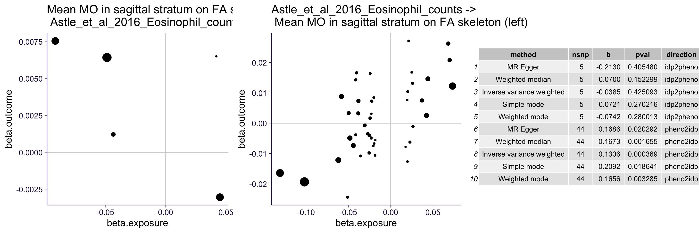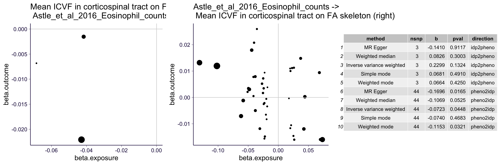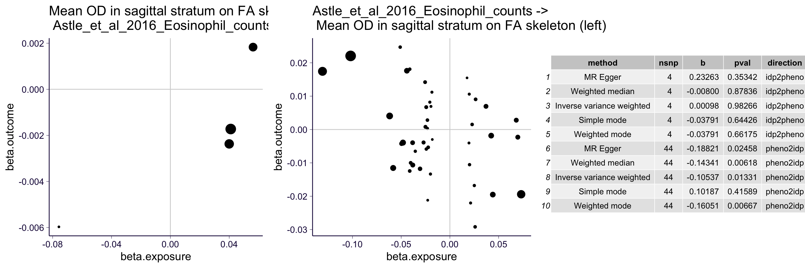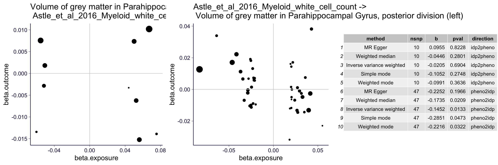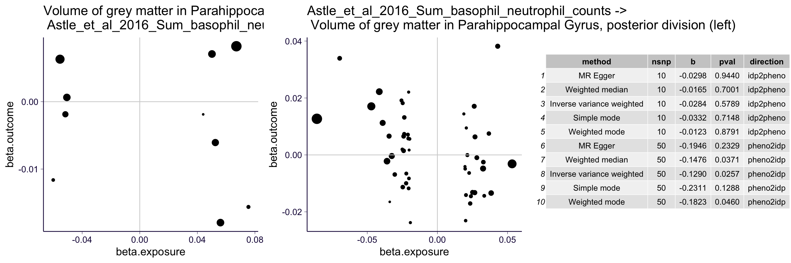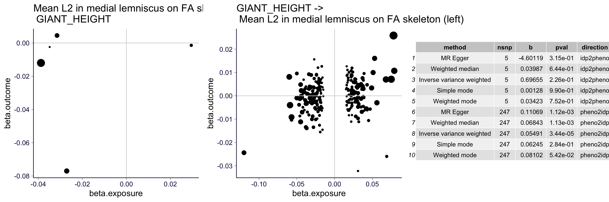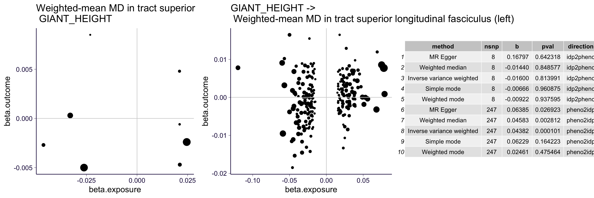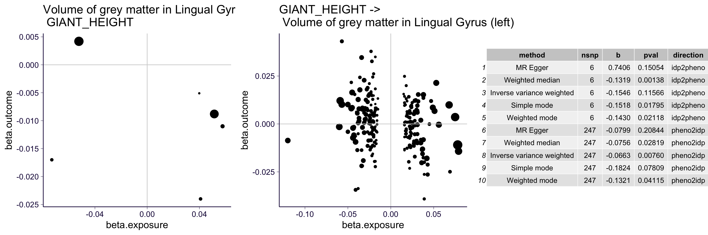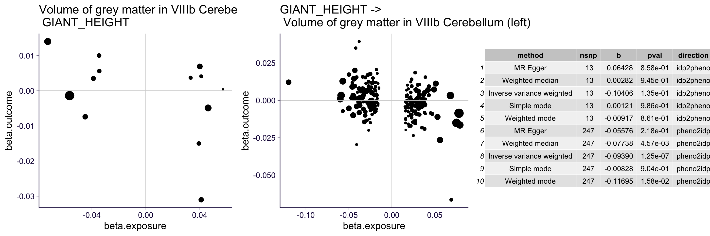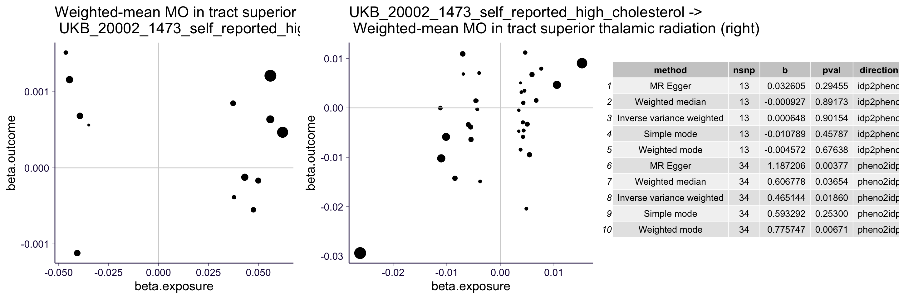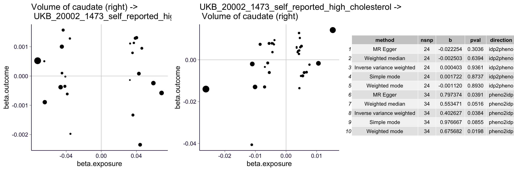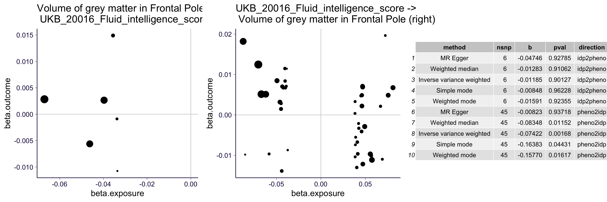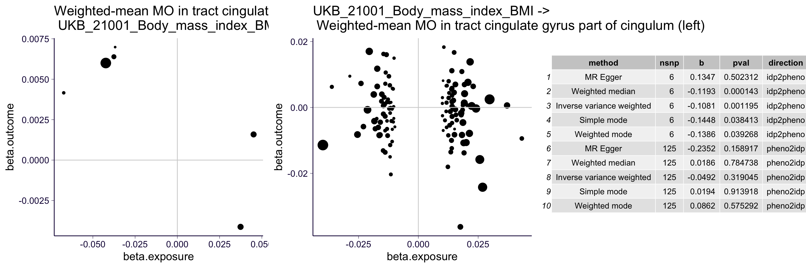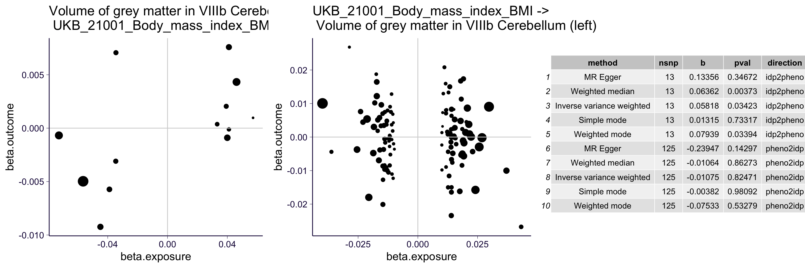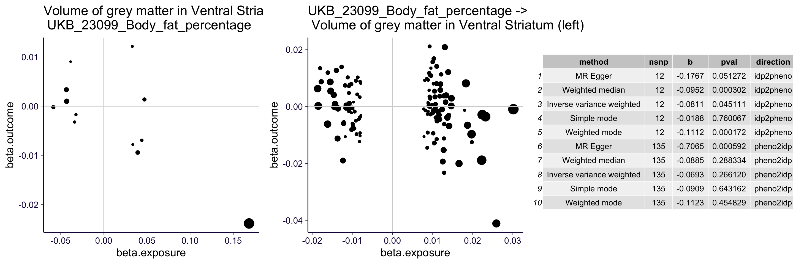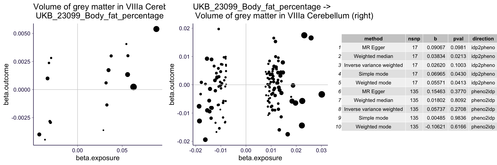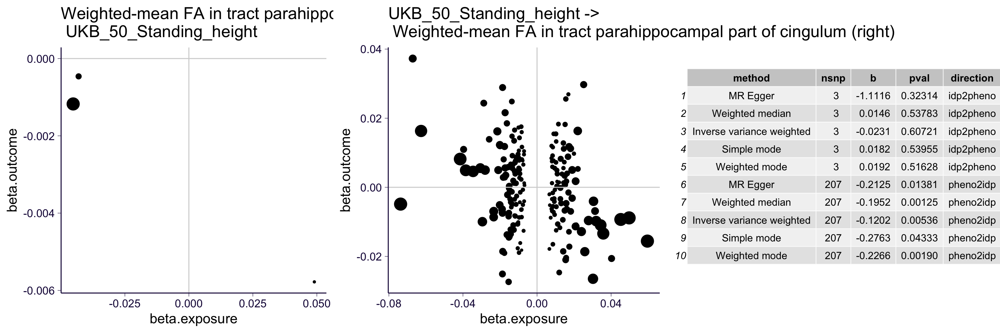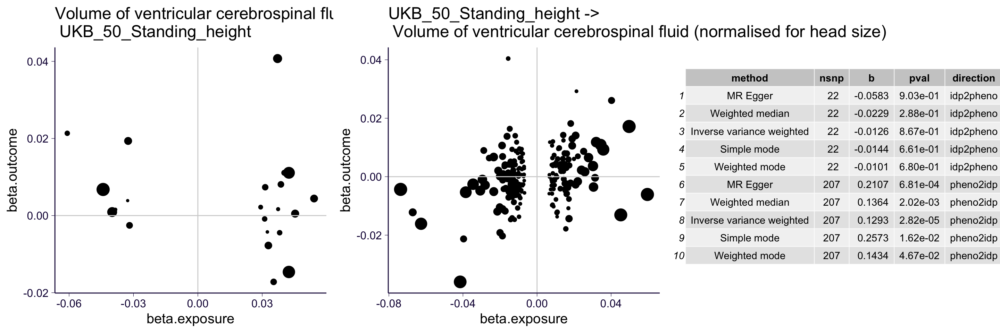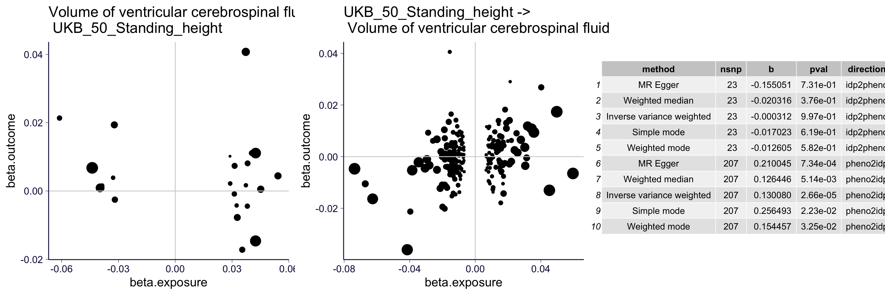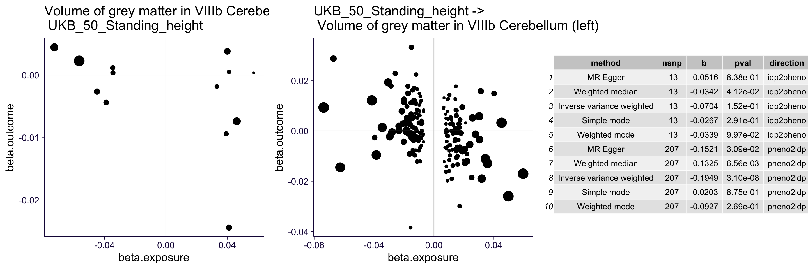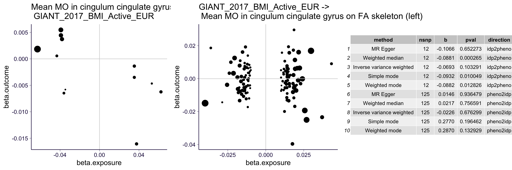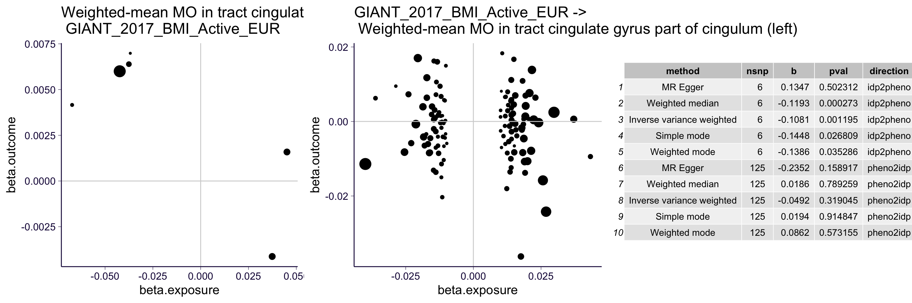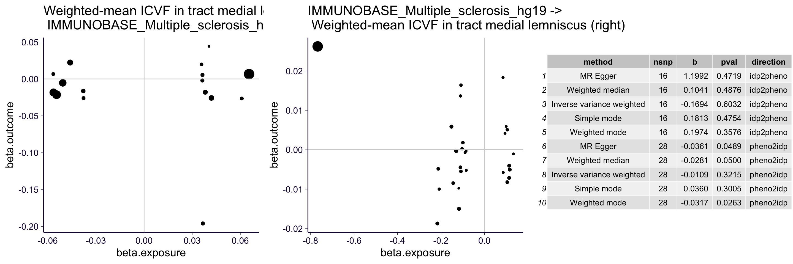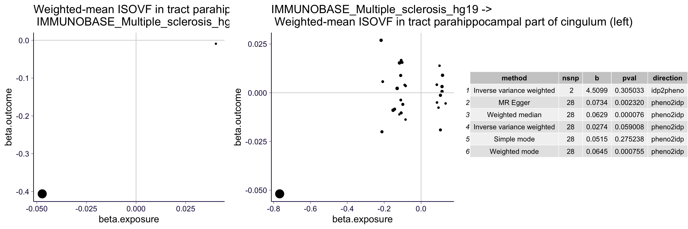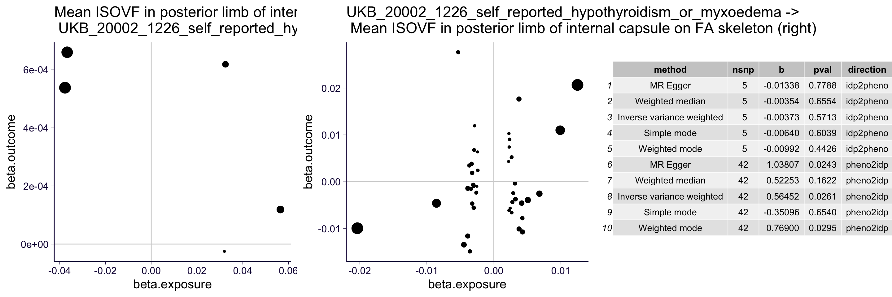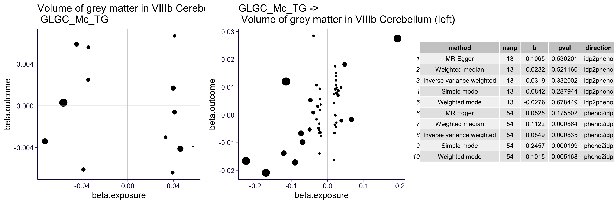
df_mr %>% filter(pval < 0.05) %>% group_by(direction, pheno, Field) %>% summarize(n_sig_pval = n()) %>% filter(n_sig_pval >= 3) %>% pander()## `summarise()` regrouping output by 'direction', 'pheno' (override with `.groups` argument)| direction | pheno | Field | n_sig_pval |
|---|---|---|---|
| idp2pheno | GIANT_2017_BMI_Active_EUR | Mean MO in cingulum cingulate gyrus on FA skeleton (left) | 3 |
| idp2pheno | GIANT_2017_BMI_Active_EUR | Weighted-mean MO in tract cingulate gyrus part of cingulum (left) | 4 |
| idp2pheno | GIANT_HEIGHT | Volume of grey matter in Lingual Gyrus (left) | 3 |
| idp2pheno | UKB_21001_Body_mass_index_BMI | Volume of grey matter in VIIIb Cerebellum (left) | 3 |
| idp2pheno | UKB_21001_Body_mass_index_BMI | Weighted-mean MO in tract cingulate gyrus part of cingulum (left) | 4 |
| idp2pheno | UKB_23099_Body_fat_percentage | Volume of grey matter in Ventral Striatum (left) | 3 |
| idp2pheno | UKB_23099_Body_fat_percentage | Volume of grey matter in VIIIa Cerebellum (right) | 3 |
| pheno2idp | Astle_et_al_2016_Eosinophil_counts | Mean ICVF in corticospinal tract on FA skeleton (right) | 3 |
| pheno2idp | Astle_et_al_2016_Eosinophil_counts | Mean MO in sagittal stratum on FA skeleton (left) | 5 |
| pheno2idp | Astle_et_al_2016_Eosinophil_counts | Mean OD in sagittal stratum on FA skeleton (left) | 4 |
| pheno2idp | Astle_et_al_2016_Myeloid_white_cell_count | Volume of grey matter in Parahippocampal Gyrus, posterior division (left) | 4 |
| pheno2idp | Astle_et_al_2016_Sum_basophil_neutrophil_counts | Volume of grey matter in Parahippocampal Gyrus, posterior division (left) | 3 |
| pheno2idp | GIANT_HEIGHT | Mean L2 in medial lemniscus on FA skeleton (left) | 3 |
| pheno2idp | GIANT_HEIGHT | Volume of grey matter in Lingual Gyrus (left) | 3 |
| pheno2idp | GIANT_HEIGHT | Volume of grey matter in VIIIb Cerebellum (left) | 3 |
| pheno2idp | GIANT_HEIGHT | Weighted-mean MD in tract superior longitudinal fasciculus (left) | 3 |
| pheno2idp | GLGC_Mc_TG | Volume of grey matter in VIIIb Cerebellum (left) | 4 |
| pheno2idp | IMMUNOBASE_Multiple_sclerosis_hg19 | Weighted-mean ICVF in tract medial lemniscus (right) | 3 |
| pheno2idp | IMMUNOBASE_Multiple_sclerosis_hg19 | Weighted-mean ISOVF in tract parahippocampal part of cingulum (left) | 3 |
| pheno2idp | UKB_20002_1226_self_reported_hypothyroidism_or_myxoedema | Mean ISOVF in posterior limb of internal capsule on FA skeleton (right) | 3 |
| pheno2idp | UKB_20002_1473_self_reported_high_cholesterol | Volume of caudate (right) | 3 |
| pheno2idp | UKB_20002_1473_self_reported_high_cholesterol | Weighted-mean MO in tract superior thalamic radiation (right) | 4 |
| pheno2idp | UKB_20016_Fluid_intelligence_score | Volume of grey matter in Frontal Pole (right) | 4 |
| pheno2idp | UKB_50_Standing_height | Volume of grey matter in VIIIb Cerebellum (left) | 3 |
| pheno2idp | UKB_50_Standing_height | Volume of ventricular cerebrospinal fluid | 5 |
| pheno2idp | UKB_50_Standing_height | Volume of ventricular cerebrospinal fluid (normalised for head size) | 5 |
| pheno2idp | UKB_50_Standing_height | Weighted-mean FA in tract parahippocampal part of cingulum (right) | 5 |
p2z = function(p, b) {
sign(b) * qnorm(p / 2)
}
df_bcc = data.frame(
id = c('wbc', 'rbc', 'platelet', 'lymphocyte', 'monocyte', 'neutrophil', 'eosinophil'),
gwas = c('Astle_et_al_2016_White_blood_cell_count', 'Astle_et_al_2016_Red_blood_cell_count', 'Astle_et_al_2016_Platelet_count', 'Astle_et_al_2016_Lymphocyte_counts', 'Astle_et_al_2016_Monocyte_count', 'Astle_et_al_2016_Neutrophil_count', 'Astle_et_al_2016_Eosinophil_counts')
)
df_t1_indiv = inner_join(
read.csv('~/Desktop/tmp/ukb_idp/data/imagexcan_round_1.linear.t1.csv'),
read.csv('~/Desktop/tmp/ukb_idp/data/imagexcan_round_1.susie.t1.csv'),
by = c('phenotype', 'IDP')
) %>% mutate(idp_type = 't1') %>% filter(phenotype %in% df_bcc$id)
df_dmri_indiv = inner_join(
read.csv('~/Desktop/tmp/ukb_idp/data/imagexcan_round_1.linear.dmri.csv'),
read.csv('~/Desktop/tmp/ukb_idp/data/imagexcan_round_1.susie.dmri.csv'),
by = c('phenotype', 'IDP')
) %>% mutate(idp_type = 'dmri') %>% filter(phenotype %in% df_bcc$id)
df_indiv = rbind(
df_t1_indiv, df_dmri_indiv
)
df_ss = df %>% filter(phenotype %in% df_bcc$gwas) %>% inner_join(df_bcc, by = c('phenotype' = 'gwas'))
tmp = inner_join(df_indiv, df_ss, by = c('phenotype' = 'id', 'IDP', 'idp_type'), suffix = c('.indiv', '.ss'))
tmp %>%
# filter(pval.indiv < 0.05, pval.ss < 0.05) %>%
group_by(phenotype) %>%
filter(abs(bhat.ss) < quantile(abs(bhat.ss), probs = 0.95), abs(bhat.indiv) < quantile(abs(bhat.indiv), probs = 0.975)) %>%
ggplot() + geom_point(aes(x = bhat.indiv, y = bhat.ss), alpha = 0.2) + facet_wrap(~phenotype, scales = 'free') + th2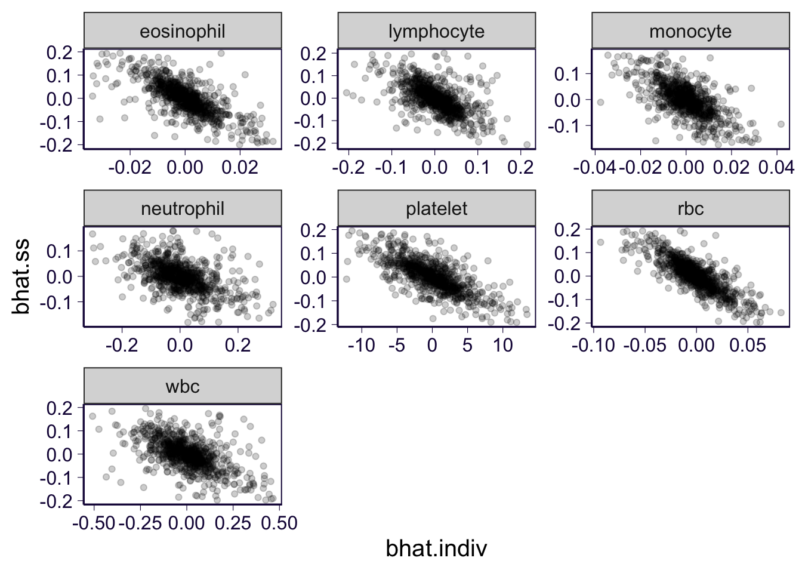
tmp %>%
# filter(pval.indiv < 0.05, pval.ss < 0.05) %>%
group_by(phenotype) %>%
# filter(abs(bhat.ss) < quantile(abs(bhat.ss), probs = 0.95), abs(bhat.indiv) < quantile(abs(bhat.indiv), probs = 0.975)) %>%
mutate(z.indiv = p2z(pval.indiv, bhat.indiv), z.ss = p2z(pval.ss, bhat.ss)) %>%
ggplot() + geom_point(aes(x = z.indiv, y = z.ss), alpha = 0.2) + facet_wrap(~phenotype) + th2 + coord_equal() + geom_abline(slope = -1, intercept = 0, color = 'red')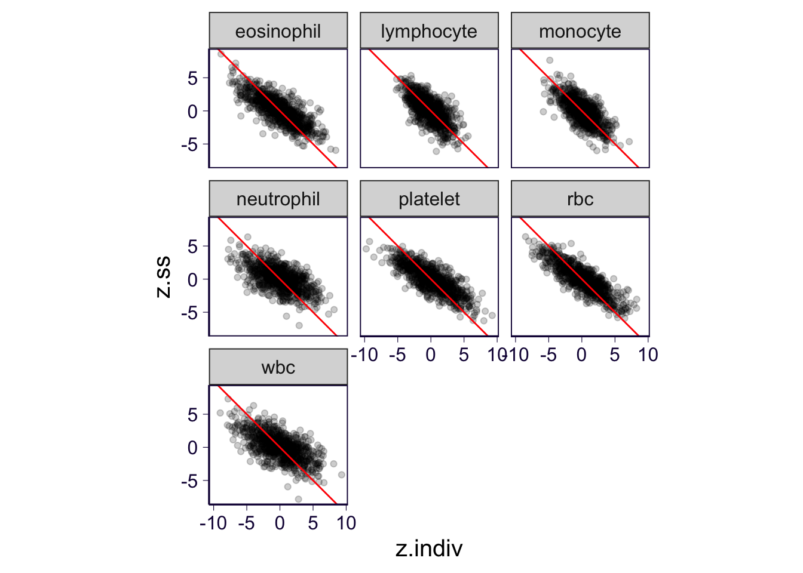
tmp %>%
# filter(pval.indiv < 0.05, pval.ss < 0.05) %>%
group_by(phenotype) %>%
# filter(abs(bhat.ss) < quantile(abs(bhat.ss), probs = 0.95), abs(bhat.indiv) < quantile(abs(bhat.indiv), probs = 0.975)) %>%
# mutate(z.indiv = p2z(pval.indiv, bhat.indiv), z.ss = p2z(pval.ss, bhat.ss)) %>%
ggplot() + geom_point(aes(x = pip.indiv, y = pip.ss), alpha = 0.2) + facet_wrap(~phenotype) + th2 + coord_equal() 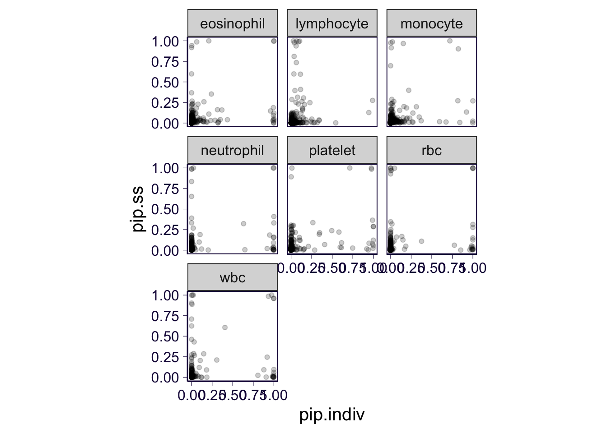